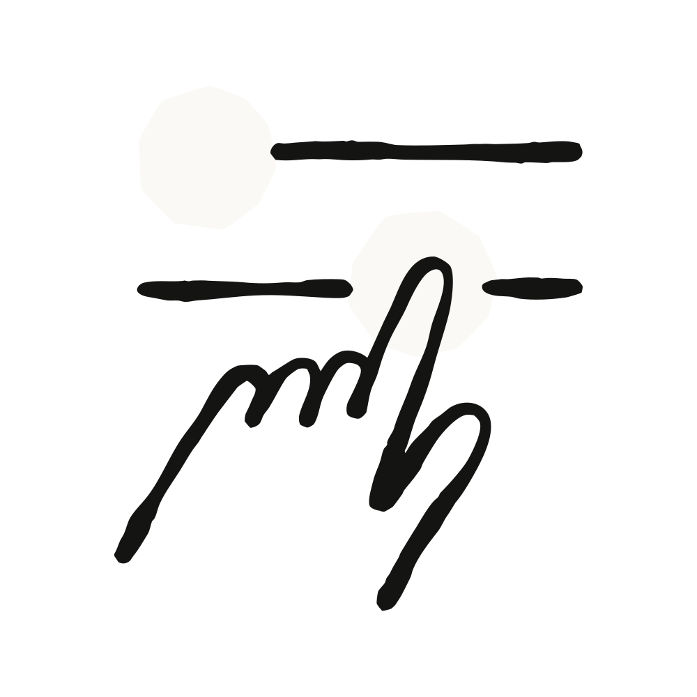

Anthropic은 운영 단순성 때문에 대부분의 기업에는 자사 호스티드 제공 방식을 강하게 권한다. 운영·유지할 인프라가 없다는 점이 핵심이다. 셀프호스트 환경은 네트워크·툴링·컴플라이언스 요건 때문에 에이전트 실행을 직접 통제하는 인프라에 두어야 하는 팀을 위한 것이다. 이 경로를 택한다면 셋업과 지속적인 유지보수를 담당할 엔지니어링 인력을 배치할 계획을 세우라고 명시한다.
프리뷰 프로그램에서 조직들이 셀프호스트 환경을 도입한 주요 이유는 세 가지였다.
"셀프호스트 환경 덕분에 우리는 보안·운영 통제를 유지하면서 Claude Code를 기존 개발 워크플로에 통합할 수 있었다." — George Jacob, Faire 시니어 엔지니어링 매니저
리포지터리 체크아웃, 빌드 산출물, 시크릿, 그리고 세션이 만들거나 수정한 모든 파일은 우리가 프로비저닝한 인프라에 남는다.
다만 대화 자체 — 프롬프트, 응답, 그리고 Claude가 읽은 코드를 포함할 수 있는 도구 결과 — 는 추론을 위해 Anthropic으로 전송되며, 어느 표면에서든 세션을 이어받을 수 있도록 세션 트랜스크립트가 저장된다. 이 구분은 셀프호스트를 검토할 때 반드시 짚어야 하는 부분이다.
셀프호스트 환경을 쓸 때는 러너(runners) 집합을 배포한다. 러너는 장시간 유지되는 프로세스로, 세션을 집어 들고 세션마다 Claude Code 프로세스를 시작한다. 러너에는 두 가지 모드가 있다.
러너 하나가 여러 세션을 처리할 수 있지만 각 세션은 자기 체크아웃에서 실행되므로, 개발자 간·계정 간 작업이 격리된다. 지원되는 모든 표면에서 시작한 세션이 같은 환경으로 라우팅되기 때문에, 한 번 설정하면 팀원이 어디서 세션을 시작하든 동작한다.
claude를 실행한 사용자에게 묶인다.
셀프호스트 환경은 플랫폼 팀이 운영하는 공유 인프라에서 세션을 돌리며 누구나 쓸 수 있다.
셀프호스트 환경은 Claude Team·Enterprise 플랜 조직에 퍼블릭 베타로 제공된다. 기본적으로 꺼져 있으며, ZDR(Zero Data Retention)을 쓰는 조직에서는 사용할 수 없다.
플랫폼 팀, 개발자 경험 팀, 또는 개발 생산성 팀이 셋업과 지속 운영을 소유하도록 계획하라. 여기에는 러너 이미지 구축·유지, 러너 업데이트, 그리고 온디맨드 모드를 쓴다면 오케스트레이터 운영이 포함된다.
자세한 내용은 문서를 참고하고, 피드백은 GitHub 또는 Anthropic 담당 팀을 통해 전달하면 된다.